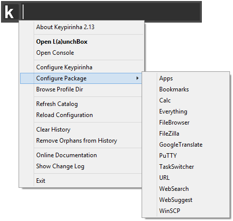

7. Configuration¶
7.1. Introduction¶
Keypirinha is file-driven. Its configuration data resides in files, which are human readable and modifiable.
By design, Keypirinha does not offer any graphical interface to modify its settings, neither does it alter your configuration files.
While, at first glance, it might seem like backward design choice for a desktop application, it perfectly makes sense when you realize how powerful and flexible it can be:
- variables assignment
- use of system or environment variables anywhere
- machine-specific and/or user-specific configuration
Nevertheless, Keypirinha offers a convenient way to open and edit its configuration files at runtime.
Search for the “Keypirinha: Configure …” items from the LaunchBox.

Or use the main popup menu by clicking the right mouse button anywhere on the LaunchBox except the text field.
Important
Any change to the configuration files will be detected automatically at runtime and new/modified settings will immediately be applied.
7.2. First Modification¶
If you have selected the Configure Application item for the first time, you
should now see two text files opened side by side on your screen.
The one on the left is the original configuration file, bundled with the
application. It shows the exhaustive list of the available settings. This file
is not meant to be modified. Let’s call it Default.
The one on the right side should be blank on a fresh install, which means
all the default configuration values defined in the Default file are used.
Let’s call this file User.
Configuration files in Keypirinha are INI files. This format has been chosen
because it is easy to read and to edit. But there are some things to keep in
mind when editing a configuration file…
Say you want to modify the max_results value for example. In
Keypirinha’s INI files, every value belongs to a given section. So if
you just add a single line like max_results = 100 to the User file,
it will not have the desired effect. The max_results setting is
part of the gui section so you must prepend the [gui] line.
The default value of max_results is 100, let’s change it to 90. The
User file should now look like this:
[gui]
max_results = 90
Save the User configuration file by pressing Ctrl+S or by clicking
the menu of the editor. Modifications are now
applied, you can close both editor windows.
Tip
If the gui section was already declared in your configuration file, you
do not need to repeat the [gui] line as long as its settings are all
grouped under it. For example:
[gui]
show_on_taskbar = no
max_results = 90
7.3. Modification at Runtime¶
When you save a new version of one or several of your configuration files, Keypirinha automatically detects the modifications you have made, if any, and apply them at runtime. The same apply to packages’ configuration.
7.4. The INI Format¶
The INI file format is not precisely defined and there are plenty of
variants out there. The format used by Keypirinha is readable by
configparser (ExtendedInterpolation is used), a Python standard
module for those who are familiar with it.
7.4.1. Example¶
# This is a comment line so I can write whatever I want
[config]
# Values defined below belong to the 'config' section
boolean_value = yes
editor = ${var:my_editor}
say_hello = ${var:hello} World
multiline_setting =
${say_hello}
This is a multiple line value.
You can add as much lines as desired.
As long as they are indented deeper than the first line of the value.
[var]
# Reusable values are grouped into the 'var' section
my_editor = D:/Apps/MyEditor/ShinyEditor.exe
hello = Hello
7.4.2. Comments¶
It is possible to add comments to an INI file. Comments are not interpreted
by the application and they are skipped at parsing-time.
To add a comment to your configuration file, start a line with a #
character.
7.4.3. Multiple Line Values¶
Keypirinha or its packages may accept multiple line values for some of their settings (it is always specified). When you write mutiple line values, you must take care of indenting each line correctly to ensure the configuration file will be interpreted properly by the application.
See the Example section above for an exampe.
7.4.4. Reusable Values¶
Keypirinha allows you to declare values that can be used elsewhere in any configuration file (application and plugins).
If you wish your reusable value to be usable in any configuration file, you must
declare it in the var dedicated section in the main application’s
configuration file Keypirinha.ini. Keypirinha will take care of
replicating the var section in every subsequently loaded configuration file.
Tip
While it is possible to have a var section in any configuration file, it
is usually preferable to have your reusable values all grouped in the same
file (i.e.: Keypirinha.ini) to avoid mistakes and unexpected
behavior.
Note
The var section does not have to be defined at the beginning of the
file.
See the Example section above for an exampe.
7.4.5. Predefined variables¶
Keypirinha also automatically populates the var section with some predefined
values that may come handy.
To use them, use the following syntax in your configuration file:
${var:APP_DIR} or ${var:KNOWNFOLDER_MUSIC}, …
# Example of using a variable predefined by Keypirinha
[external]
editor = "%{var:APP_DIR}\..\MyEditor\MyEditor.exe"
APP_DRIVE
The drive on which the application is installed.
Example:C:\
APP_DIR
The path to the root/install directory of the application.
Examples:C:\Program Files\Keypirinha(installed mode)U:\USBApps\Keypirinha(portable mode)
APP_EXE
The path to application’s executable
Examples:C:\Program Files\Keypirinha\Keypirinha.exe(installed mode)U:\USBApps\Keypirinha\Keypirinha.exe(portable mode)
APP_ARCH
The architecture of the application.
Possible values:x86(32-bit)x64(64-bit)
PROFILE_DIR
The Profile directory, parent of the User, InstalledPackages and Packages directories.
Examples:C:\Users\Bob\AppData\Roaming\Keypirinha(installed mode)U:\USBApps\Keypirinha\portable\Profile(portable mode)
PROFILE_DIR_USER
The User directory, where user’s configuration files are stored.
Examples:C:\Users\Bob\AppData\Roaming\Keypirinha\User(installed mode)U:\USBApps\Keypirinha\portable\Profile\User(portable mode)
PROFILE_DIR_INSTALLED_PACKS
The InstalledPackages directory, home of the downloaded packages.
Examples:C:\Users\Bob\AppData\Roaming\Keypirinha\InstalledPackagesin installed modeU:\USBApps\Keypirinha\portable\Profile\InstalledPackagesin portable mode
PROFILE_DIR_LIVE_PACKS
The Packages directory, where the live packages (modifiable at runtime) are stored.
Examples:C:\Users\Bob\AppData\Roaming\Keypirinha\Packages(installed mode)U:\USBApps\Keypirinha\portable\Profile\Packages(portable mode)
For convenience, some Windows’ Known Folders are also predefined. They may come handy to configure some packages.
# Example of using a "Known Folder" value [external] editor = "%{var:KNOWNFOLDER_LOCALAPPDATA}\MyEditor\MyEditor.exe"
Name Expands to (example; may differ on your system) KNOWNFOLDER_ACCOUNTPICTURES%APPDATA%\Microsoft\Windows\AccountPictures(Win8+)KNOWNFOLDER_CAMERAROLL%USERPROFILE%\Pictures\Camera Roll(Win8.1+)KNOWNFOLDER_COMMONSTARTMENU%ALLUSERSPROFILE%\Microsoft\Windows\Start MenuKNOWNFOLDER_COMMONSTARTUP%ALLUSERSPROFILE%\Microsoft\Windows\Start Menu\Programs\StartUpKNOWNFOLDER_CONTACTS%USERPROFILE%\ContactsKNOWNFOLDER_DESKTOP%USERPROFILE%\DesktopKNOWNFOLDER_DOCUMENTS%USERPROFILE%\DocumentsKNOWNFOLDER_DOWNLOADS%USERPROFILE%\DownloadsKNOWNFOLDER_FAVORITES%USERPROFILE%\FavoritesKNOWNFOLDER_FONTS%windir%\FontsKNOWNFOLDER_LINKS%USERPROFILE%\LinksKNOWNFOLDER_LOCALAPPDATA%LOCALAPPDATA%(%USERPROFILE%\AppData\Local)KNOWNFOLDER_LOCALAPPDATALOW%USERPROFILE%\AppData\LocalLowKNOWNFOLDER_MUSIC%USERPROFILE%\MusicKNOWNFOLDER_PICTURES%USERPROFILE%\PicturesKNOWNFOLDER_PLAYLISTS%USERPROFILE%\Music\PlaylistsKNOWNFOLDER_PROFILE%USERPROFILE%(%SystemDrive%\Users\%USERNAME%)KNOWNFOLDER_PROGRAMFILES%ProgramFiles%KNOWNFOLDER_PROGRAMFILESX64%ProgramFiles%KNOWNFOLDER_PROGRAMFILESX86%ProgramFiles(x86)%KNOWNFOLDER_PROGRAMFILESCOMMON%ProgramFiles%\Common FilesKNOWNFOLDER_PROGRAMFILESCOMMONX64%ProgramFiles%\Common FilesKNOWNFOLDER_PROGRAMFILESCOMMONX86%ProgramFiles(x86)%\Common FilesKNOWNFOLDER_PROGRAMS%APPDATA%\Microsoft\Windows\Start Menu\ProgramsKNOWNFOLDER_PUBLIC%PUBLIC%(%SystemDrive%\Users\Public)KNOWNFOLDER_PUBLICDESKTOP%PUBLIC%\DesktopKNOWNFOLDER_PUBLICDOCUMENTS%PUBLIC%\DocumentsKNOWNFOLDER_PUBLICDOWNLOADS%PUBLIC%\DownloadsKNOWNFOLDER_PUBLICMUSIC%PUBLIC%\MusicKNOWNFOLDER_PUBLICPICTURES%PUBLIC%\PicturesKNOWNFOLDER_PUBLICVIDEOS%PUBLIC%\VideosKNOWNFOLDER_ROAMINGAPPDATA%APPDATA%(%USERPROFILE%\AppData\Roaming)KNOWNFOLDER_SCREENSHOTS%USERPROFILE%\Pictures\Screenshots(Win8+)KNOWNFOLDER_SENDTO%APPDATA%\Microsoft\Windows\SendToKNOWNFOLDER_SKYDRIVE%USERPROFILE%\OneDrive(Win8.1+)KNOWNFOLDER_SKYDRIVECAMERAROLL%USERPROFILE%\OneDrive\Pictures\Camera Roll(Win8.1+)KNOWNFOLDER_SKYDRIVEDOCUMENTS%USERPROFILE%\OneDrive\Documents(Win8.1+)KNOWNFOLDER_SKYDRIVEPICTURES%USERPROFILE%\OneDrive\Pictures(Win8.1+)KNOWNFOLDER_STARTMENU%APPDATA%\Microsoft\Windows\Start MenuKNOWNFOLDER_STARTUP%APPDATA%\Microsoft\Windows\Start Menu\Programs\StartUpKNOWNFOLDER_SYSTEM%windir%\system32KNOWNFOLDER_SYSTEMX86%windir%\system32KNOWNFOLDER_USERPROFILES%SystemDrive%\UsersKNOWNFOLDER_USERPROGRAMFILES%LOCALAPPDATA%\ProgramsKNOWNFOLDER_USERPROGRAMFILESCOMMON%LOCALAPPDATA%\Programs\Common(Win7+)KNOWNFOLDER_VIDEOS%USERPROFILE%\VideosKNOWNFOLDER_WINDOWS%windir%Name Expands to KNOWNFOLDERGUID_ACCOUNTPICTURES{008ca0b1-55b4-4c56-b8a8-4de4b299d3be}KNOWNFOLDERGUID_CAMERAROLL{ab5fb87b-7ce2-4f83-915d-550846c9537b}KNOWNFOLDERGUID_COMMONSTARTMENU{a4115719-d62e-491d-aa7c-e74b8be3b067}KNOWNFOLDERGUID_COMMONSTARTUP{82a5ea35-d9cd-47c5-9629-e15d2f714e6e}KNOWNFOLDERGUID_CONTACTS{56784854-c6cb-462b-8169-88e350acb882}KNOWNFOLDERGUID_DESKTOP{b4bfcc3a-db2c-424c-b029-7fe99a87c641}KNOWNFOLDERGUID_DOCUMENTS{fdd39ad0-238f-46af-adb4-6c85480369c7}KNOWNFOLDERGUID_DOWNLOADS{374de290-123f-4565-9164-39c4925e467b}KNOWNFOLDERGUID_FAVORITES{1777f761-68ad-4d8a-87bd-30b759fa33dd}KNOWNFOLDERGUID_FONTS{fd228cb7-ae11-4ae3-864c-16f3910ab8fe}KNOWNFOLDERGUID_LINKS{bfb9d5e0-c6a9-404c-b2b2-ae6db6af4968}KNOWNFOLDERGUID_LOCALAPPDATA{f1b32785-6fba-4fcf-9d55-7b8e7f157091}KNOWNFOLDERGUID_LOCALAPPDATALOW{a520a1a4-1780-4ff6-bd18-167343c5af16}KNOWNFOLDERGUID_MUSIC{4bd8d571-6d19-48d3-be97-422220080e43}KNOWNFOLDERGUID_PICTURES{33e28130-4e1e-4676-835a-98395c3bc3bb}KNOWNFOLDERGUID_PLAYLISTS{de92c1c7-837f-4f69-a3bb-86e631204a23}KNOWNFOLDERGUID_PROFILE{5e6c858f-0e22-4760-9afe-ea3317b67173}KNOWNFOLDERGUID_PROGRAMFILES{905e63b6-c1bf-494e-b29c-65b732d3d21a}KNOWNFOLDERGUID_PROGRAMFILESX64{6d809377-6af0-444b-8957-a3773f02200e}KNOWNFOLDERGUID_PROGRAMFILESX86{7c5a40ef-a0fb-4bfc-874a-c0f2e0b9fa8e}KNOWNFOLDERGUID_PROGRAMFILESCOMMON{f7f1ed05-9f6d-47a2-aaae-29d317c6f066}KNOWNFOLDERGUID_PROGRAMFILESCOMMONX64{6365d5a7-0f0d-45e5-87f6-0da56b6a4f7d}KNOWNFOLDERGUID_PROGRAMFILESCOMMONX86{de974d24-d9c6-4d3e-bf91-f4455120b917}KNOWNFOLDERGUID_PROGRAMS{a77f5d77-2e2b-44c3-a6a2-aba601054a51}KNOWNFOLDERGUID_PUBLIC{dfdf76a2-c82a-4d63-906a-5644ac457385}KNOWNFOLDERGUID_PUBLICDESKTOP{c4aa340d-f20f-4863-afef-f87ef2e6ba25}KNOWNFOLDERGUID_PUBLICDOCUMENTS{ed4824af-dce4-45a8-81e2-fc7965083634}KNOWNFOLDERGUID_PUBLICDOWNLOADS{3d644c9b-1fb8-4f30-9b45-f670235f79c0}KNOWNFOLDERGUID_PUBLICMUSIC{3214fab5-9757-4298-bb61-92a9deaa44ff}KNOWNFOLDERGUID_PUBLICPICTURES{b6ebfb86-6907-413c-9af7-4fc2abf07cc5}KNOWNFOLDERGUID_PUBLICVIDEOS{2400183a-6185-49fb-a2d8-4a392a602ba3}KNOWNFOLDERGUID_ROAMINGAPPDATA{3eb685db-65f9-4cf6-a03a-e3ef65729f3d}KNOWNFOLDERGUID_SCREENSHOTS{b7bede81-df94-4682-a7d8-57a52620b86f}KNOWNFOLDERGUID_SENDTO{8983036c-27c0-404b-8f08-102d10dcfd74}KNOWNFOLDERGUID_SKYDRIVE{a52bba46-e9e1-435f-b3d9-28daa648c0f6}KNOWNFOLDERGUID_SKYDRIVECAMERAROLL{767e6811-49cb-4273-87c2-20f355e1085b}KNOWNFOLDERGUID_SKYDRIVEDOCUMENTS{24d89e24-2f19-4534-9dde-6a6671fbb8fe}KNOWNFOLDERGUID_SKYDRIVEPICTURES{339719b5-8c47-4894-94c2-d8f77add44a6}KNOWNFOLDERGUID_STARTMENU{625b53c3-ab48-4ec1-ba1f-a1ef4146fc19}KNOWNFOLDERGUID_STARTUP{b97d20bb-f46a-4c97-ba10-5e3608430854}KNOWNFOLDERGUID_SYSTEM{1ac14e77-02e7-4e5d-b744-2eb1ae5198b7}KNOWNFOLDERGUID_SYSTEMX86{d65231b0-b2f1-4857-a4ce-a8e7c6ea7d27}KNOWNFOLDERGUID_USERPROFILES{0762d272-c50a-4bb0-a382-697dcd729b80}KNOWNFOLDERGUID_USERPROGRAMFILES{5cd7aee2-2219-4a67-b85d-6c9ce15660cb}KNOWNFOLDERGUID_USERPROGRAMFILESCOMMON{bcbd3057-ca5c-4622-b42d-bc56db0ae516}KNOWNFOLDERGUID_VIDEOS{18989b1d-99b5-455b-841c-ab7c74e4ddfc}KNOWNFOLDERGUID_WINDOWS{f38bf404-1d43-42f2-9305-67de0b28fc23}
7.4.6. Environment Values¶
For convenience, Keypirinha automatically defines a section named env,
populated with all the environment variables that could be found at the moment
the configuration file is read.
The env section is defined (overwritten) in every loaded configuration
file.
Tip
When possible, it is good practice and recommended to use a KNOWNFOLDER
predefined variable instead of environment values. This is especially true
if you run Keypirinha on a USB key across multiple machines.
7.5. Machine and User Specific Settings¶
It is possible to have settings that will be applied only when Keypirinha runs on a specific machine and/or under a specific user session.
To do that, the configuration file must be named according to a predefined pattern.
For example, Keypirinha.ini which is application’s main configuration
file. Keypirinha being the name part of the file. Keypirinha will
automatically scan for these files each time it has to load its configuration
files, in order of precedence, which means a value redefined in a file
overrides the previous one(s):
Keypirinha.ini: the main fileKeypirinha.@MACHINE.ini: machine-specific configuration (any user). Notice the@prefix.Keypirinha.USER.ini: user-specific configuration (any machine)Keypirinha.USER@MACHINE.ini: configuration specific to a user on a specific machine
Where MACHINE is the NetBIOS name of your computer (enter the echo
%COMPUTERNAME% command in a system console to get it) and USER is the name
of the currently logged user (echo %USERNAME%).
Tip
This also works with the packages configuration files located in your User directory.